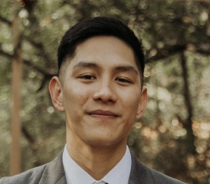

Stephen Navarra

Summary
I am a System Integration/Test Engineer at Lockheed Martin with over a decade of experience in technical support, hardware testing, and system integration across aerospace and semiconductor industries. My background includes leading avionics teams in the Marine Corps, as well as troubleshooting and maintaining complex systems at Raytheon and Finisar. With strong skills in Zuken, LabView, Python, and MySQL, I excel at designing and testing hardware subsystems, solving technical issues, and improving system performance. I am passionate about driving innovative solutions and ensuring mission success.
Education & Training
- Bachelor of Science, Software Engineering - Western Governors University
- Marine Corps Basic Training
Work Experience
- Systems Integration/Test Engineer Sr
Lockheed Martin (MFC)
June 2019 to Present
- Developed detailed designs for new emulators, improving system capabilities.
- Produced compressive test plans for integrating new hardware subsystems.
- Troubleshot and resolved issues with test sets, efficiently identifying root causes and ensuring zero impact on
program scheduling.
- Coordinated logistics for hardware across multiple customer test events.
- Led daily Scrum meetings, facilitating cross-functional communication, tracking project progress, and ensuring
alignment with Agile methodologies to meet critical deadlines and deliverables.
- Finisar
Equipment Engineering Technician
Sep 2018 to June 2019
- Maintained and upgraded various tools used in the FAB, Front End, and Assembly Areas.
- Performed reactive and scheduled preventive maintenance on wafer and assembly processing tools, consistently
completing critical repairs within 30 minutes or less to ensure optimal uptime.
- Demonstrated strong mechanical aptitude in troubleshooting and repair tasks.
- Raytheon
Technical Support Associate
Aug 2017 to Sept 2018
- Conducted rigorous testing on radomes and antennas, executing additional tuning as needed to meet stringent specifications.
- Assisted range maintenance personnel in troubleshooting and repairing electronic controllers, reducing downtime by 20%.
- Accurately transferred test data into Microsoft Excel and other data entry software, ensuring precise record-keeping and analysis.
- Proficiently used Analytic Network Analyzers for comprehensive testing and diagnostics, enhancing product reliability.
- United States Marine Corps
F/A-18 Aviation Electrician / Sergeant
Mar 2012 to Aug 2017
- Supervised the Avionics Division, leading a team of 15-20 Marines in maintaining 10 F/A-18 aircraft, ensuring mission readiness.
- Deployed multiple times overseas, providing critical support for combat missions and achieving a 100% success rate for all flight operations.
- Scheduled, documented, and delivered technical training, significantly enhancing the qualifications and readiness of the Avionics Division.
- Counseled and mentored subordinate personnel, fostering professional growth and development within the Avionics Division.
Skills
- Certifications: Control Account Management | Collateral Duty Inspector | Engine Turn Qualification
- Skills: HTML | CSS | Javascript | Python | MySQL | LabView | JIRA | Visio | Zuken | Soldering | Wire Repair
Other